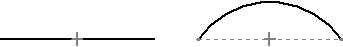
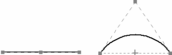
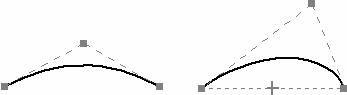

Convert To Curve command
The Convert To Curve command converts analytic geometry into a B-spline curve. B-spline curves are typically easier to use during surface modeling creation than analytic elements. For example, suppose you create a model with surfaces defined with analytic elements. You can use this command to convert the analytic elements to B-spline curve to obtain the control provided by B-spline curves.
Why convert?
-
Analytical elements are often utilized as cross-sections and guide paths during surface creation. The resulting surface has inherent limitations on how it can be edited, as lines remain linear and arcs retain their circular definition.
-
Curves provide more control, therefore are easier to use.
-
Increased control facilitates edits.
-
Allows modification of a curve’s properties.
-
Defaults to a degree of 2. You can increase the degree and add edit points for more control.
-
-
Once converted, curve shapes will have greater control over associated complex surfaces.
-
Simplifies the manipulation of a model from initial concept through final production.
-
-
Can be used on the following analytics:
-
Single non-connected analytic element: conversion results in a single non-connected B-spline curve.
-
Multiple connected analytic elements.
-
Non-tangent elements: conversion results in multiple connected B-spline curves with no cusps.
-
Tangent elements: conversion results in multiple connected and tangent B-spline curves.
-
-
-
You cannot convert B-spline curves to analytic geometry.
-
You can only convert analytics to curves while in the Edit Profile mode.
 |
Analytic line and arc element |
 |
Analytic elements converted to curves |
 |
Curve edits |
How do I
Draw a curveDisplay the control polygon for a curve
Insert or remove points on a curve
Simplify a curve
Convert analytic geometry to a b-spline curve
Draw a conic curve
Edit a conic curve
Look up more details
Curve commandCurve command bar
Curve Options dialog box
Conic command
Conic command bar
Simplify Curve command
Simplify Curve dialog box